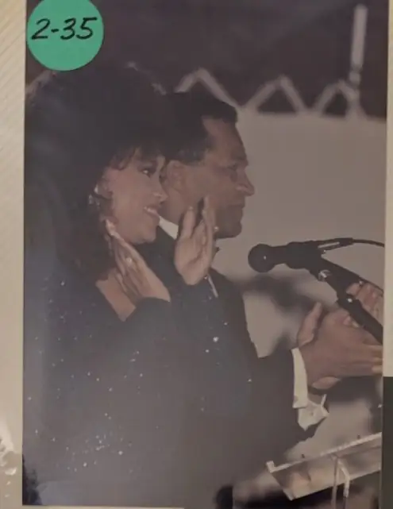

February 21 · UC Berkeley
Film symposium
The Hall of Fame held a film symposium at Wheeler Auditorium in Berkeley. A photograph associated with the program shows participants seated together for a panel discussion.
Black Filmmakers Hall of Fame · 1987
In February 1987, the Black Filmmakers Hall of Fame brought together filmmakers, performers and guests for a film symposium, a gala and the Fourteenth Annual Oscar Micheaux Awards. Jacob Blanchette photographed panel discussions, performances and gatherings associated with these occasions.
February 21–22 · Berkeley, San Francisco and Oakland
The weekend opened with a symposium at UC Berkeley and continued with a gala at San Francisco's Concourse. The following day, the annual awards were presented at Oakland's Paramount Theatre.
February 21 · UC Berkeley
The Hall of Fame held a film symposium at Wheeler Auditorium in Berkeley. A photograph associated with the program shows participants seated together for a panel discussion.

February 21 · The Concourse, San Francisco
The evening gala was held at The Concourse in San Francisco. Photographs associated with the occasion show guests at a microphone and posing together for portraits.

February 22 · Paramount Theatre, Oakland
The Fourteenth Annual Oscar Micheaux Awards recognized achievements in Black cinema at Oakland's Paramount Theatre. Associated photographs show stage presentations, musical performances and guests.
The photographic record
Browse the year's photographs and accompanying printed programs, including scenes beyond the three named occasions.